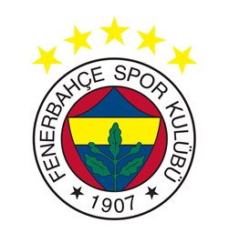
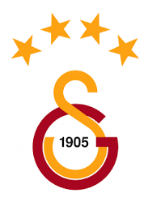
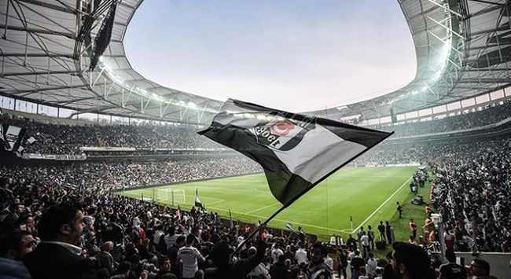

Şehrimin Önemli Külüpleri

Fenerbahçe
Fenerbahçe, Türkiye'nin en köklü ve başarılı futbol kulüplerinden biridir. 1907 yılında İstanbul'da kurulmuştur. Kulüp, Türkiye'nin en üst düzey futbol ligi olan Süper Lig'de mücadele etmektedir. Fenerbahçe, tarihinde birçok ulusal ve uluslararası başarı elde etmiştir. Türkiye'de toplamda 28 kez Türkiye Şampiyonu olmuştur. Türkiye Kupası'nda ise birçok kez şampiyonluk yaşamıştır. Ayrıca uluslararası alanda da UEFA Avrupa Ligi'nde çeyrek finale kadar yükselmiştir. Fenerbahçe'nin taraftar grubu olan "Sarı-Lacivert" renkleriyle tanınır ve Türkiye'deki en büyük taraftar kitlesine sahiptir. Kulübün rakip takımlarla olan derbileri, Türk futbolunun en önemli maçları arasındadır.

Galatasaray
Galatasaray, 1905 yılında İstanbul'da kurulmuş olan Türkiye'nin en köklü ve başarılı futbol kulüplerinden biridir. "Cim Bom" lakabıyla da bilinen Galatasaray, Türk futbolunun en önemli takımlarından biridir. Sarı-Kırmızılılar, Süper Lig'de mücadele etmektedir. Galatasaray, Türkiye'de 22 kez şampiyonluk yaşamıştır ve bu alanda en başarılı üçüncü kulüptür. Türkiye Kupası'nda da birçok kez şampiyonluk elde etmiştir. Uluslararası alanda ise 2000 yılında UEFA Kupası'nı kazanarak büyük bir başarı elde etmiştir. Bu başarı, Türk futbol tarihinde unutulmaz bir yer edinmiştir. Galatasaray taraftar grubu olan "Cim Bom" renkleriyle tanınır ve Türkiye'deki en büyük taraftar kitlesine sahiptir. Ayrıca, Fenerbahçe ile olan derbileri Türk futbolunun en çekişmeli ve heyecanlı maçları arasındadır.

Beşiktaş
Beşiktaş, 1903 yılında İstanbul'da kurulan Türkiye'nin köklü futbol kulüplerinden biridir. "Kara Kartal" lakabıyla da bilinen Beşiktaş, Süper Lig'de mücadele etmektedir. Kulüp tarihinde birçok ulusal ve uluslararası başarı elde etmiştir. Türkiye'de toplamda 16 kez şampiyonluk yaşamıştır. Türkiye Kupası'nda da birçok kez şampiyonluk elde etmiş olan Beşiktaş, uluslararası alanda da UEFA Kupası'nda çeyrek finale kadar yükselmiştir. Beşiktaş'ın taraftar grubu "Çarşı" renkleriyle tanınır ve Türkiye'deki en tutkulu taraftar kitlesine sahiptir. Beşiktaş'ın en büyük rakipleri Galatasaray ve Fenerbahçe'dir ve bu derbiler Türk futbolunun en önemli maçları arasındadır.

Fenerbahçe Futbol
Türkiye Süper Lig Şampiyonlukları: Fenerbahçe, Türkiye'nin en üst düzey futbol ligi olan Süper Lig'de toplamda 28 kez şampiyon olmuştur. Bu başarı, Türk futbol tarihindeki en fazla şampiyonluk sayılarından biridir. Türkiye Kupası Şampiyonlukları: Fenerbahçe, Türkiye Kupası'nda da birçok kez şampiyonluk yaşamıştır. Kulüp, Türkiye Kupası'nda defalarca kupayı müzesine götürmüştür. UEFA Avrupa Ligi: Fenerbahçe, uluslararası alanda da başarılar elde etmiştir. UEFA Avrupa Ligi'nde çeyrek finale kadar yükselmiş ve Avrupa'da önemli bir performans sergilemiştir. Diğer Başarılar: Fenerbahçe, Türkiye'de çeşitli diğer turnuvalarda da başarılar elde etmiştir. Türkiye Süper Kupa gibi turnuvalarda da şampiyonluk yaşamıştır.
Fenerbahçe Basket
EuroLeague Şampiyonlukları: Fenerbahçe Basketbol Takımı, Avrupa'nın en prestijli basketbol organizasyonu olan EuroLeague'de 2016-2017 sezonunda şampiyon olmuştur. Ayrıca 2015-2016, 2017-2018 ve 2018-2019 sezonlarında üst üste dört kez finale yükselmiş ve ikincilik elde etmiştir. Türkiye Basketbol Süper Ligi Şampiyonlukları: Fenerbahçe, Türkiye Basketbol Süper Ligi'nde birçok kez şampiyonluk yaşamıştır. Kulüp, son yıllarda Türkiye'nin en güçlü basketbol takımlarından biri olarak öne çıkmıştır. Türkiye Kupası Şampiyonlukları: Fenerbahçe Basketbol Takımı, Türkiye Kupası'nda da birçok kez şampiyonluk yaşamıştır. Kulüp, Türkiye Kupası'nda önemli bir rekabet ve başarı göstermektedir. Diğer Başarılar: Fenerbahçe Basketbol Takımı, EuroLeague ve Türkiye Basketbol Süper Ligi dışında da çeşitli ulusal ve uluslararası turnuvalarda başarılar elde etmiştir. Bu başarılar, Fenerbahçe'nin basketbol dalında Türk sporunun önde gelen takımlarından biri olduğunu göstermektedir.


Galatasaray Futbol
Türkiye Süper Lig Şampiyonlukları: Galatasaray, Türkiye'nin en üst düzey futbol ligi olan Süper Lig'de toplamda 22 kez şampiyon olmuştur. Bu başarı, Türk futbol tarihindeki en fazla şampiyonluk sayılarından biridir. Türkiye Kupası Şampiyonlukları: Galatasaray, Türkiye Kupası'nda da birçok kez şampiyonluk yaşamıştır. Kulüp, Türkiye Kupası'nda defalarca kupayı müzesine götürmüştür. UEFA Kupası Şampiyonluğu: Galatasaray, 2000 yılında UEFA Kupası'nı kazanarak Avrupa'da büyük bir başarı elde etmiştir. Bu zafer, Türk futbol tarihinde unutulmaz bir yer edinmiştir. UEFA Süper Kupa: Galatasaray, 2000 yılında UEFA Kupası'nı kazandıktan sonra UEFA Süper Kupa'yı da kazanmıştır. Bu, Galatasaray'ın uluslararası alandaki önemli başarılarından biridir. Diğer Başarılar: Galatasaray, Türkiye'de çeşitli diğer turnuvalarda da başarılar elde etmiştir. Türkiye Süper Kupa gibi turnuvalarda da şampiyonluk yaşamıştır.
Beşiktaş Futbol
Türkiye Süper Lig Şampiyonlukları: Beşiktaş, Türkiye'nin en üst düzey futbol ligi olan Süper Lig'de toplamda 16 kez şampiyon olmuştur. Bu başarı, Türk futbol tarihinde önemli bir yer tutmaktadır. Türkiye Kupası Şampiyonlukları: Beşiktaş, Türkiye Kupası'nda da birçok kez şampiyonluk yaşamıştır. Kulüp, Türkiye Kupası'nda önemli bir rekabet ve başarı göstermiştir. UEFA Kupası Yarı Finali: Beşiktaş, 2002-2003 sezonunda UEFA Kupası'nda yarı finale yükselmiştir. Bu, kulübün uluslararası arenada önemli bir başarısıdır. Diğer Başarılar: Beşiktaş Futbol Takımı, Türkiye'de çeşitli diğer turnuvalarda da başarılar elde etmiştir. Türkiye Süper Kupa gibi turnuvalarda da şampiyonluk yaşamıştır.
